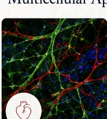
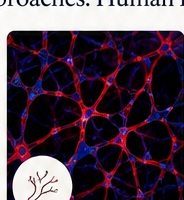
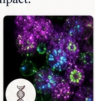
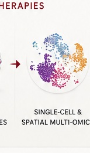
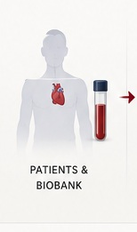
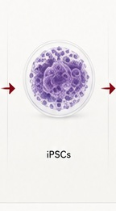
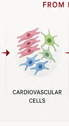
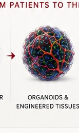
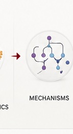
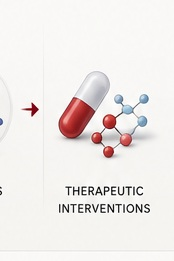

Cardiomyopathy & Heart Failure
Defining multicellular mechanisms of inherited and acquired cardiomyopathy to identify new therapeutic strategies.
Learn More →We integrate patient-derived biospecimens, human iPSCs, multicellular cardiovascular models, genome engineering, and single-cell and spatial multi-omics to uncover mechanisms of cardiovascular disease.











Defining multicellular mechanisms of inherited and acquired cardiomyopathy to identify new therapeutic strategies.
Learn More →Investigating endothelial function, vascular remodeling, and regeneration in health and disease.
Learn More →Uncovering mechanisms of cancer therapy-associated cardiotoxicity and developing precision cardioprotective strategies.
Learn More →
Using genome engineering and multi-omics to discover regulatory pathways that drive cardiovascular disease.
Learn More →
Studying the impact of environmental exposures on the cardiovascular system using human models.
Learn More →